<!DOCTYPE HTML>
<html lang="en" >
    
    <head>
        
        <meta charset="UTF-8">
        <meta http-equiv="X-UA-Compatible" content="IE=edge" />
        <title>进程 | python高级课程</title>
        <meta content="text/html; charset=utf-8" http-equiv="Content-Type">
        <meta name="description" content="">
        <meta name="generator" content="GitBook 2.6.7">
        
        
        <meta name="HandheldFriendly" content="true"/>
        <meta name="viewport" content="width=device-width, initial-scale=1, user-scalable=no">
        <meta name="apple-mobile-web-app-capable" content="yes">
        <meta name="apple-mobile-web-app-status-bar-style" content="black">
        <link rel="apple-touch-icon-precomposed" sizes="152x152" href="../gitbook/images/apple-touch-icon-precomposed-152.png">
        <link rel="shortcut icon" href="../gitbook/images/favicon.ico" type="image/x-icon">
        
    <link rel="stylesheet" href="../gitbook/style.css">
    
        
        <link rel="stylesheet" href="../gitbook/plugins/gitbook-plugin-highlight/website.css">
        
    
        
        <link rel="stylesheet" href="../gitbook/plugins/gitbook-plugin-search/search.css">
        
    
        
        <link rel="stylesheet" href="../gitbook/plugins/gitbook-plugin-fontsettings/website.css">
        
    
    

        
    
    
    <link rel="next" href="../03section/04_协程.html" />
    
    
    <link rel="prev" href="../03section/02_线程.html" />
    

        
    </head>
    <body>
        
        
    <div class="book"
        data-level="3.3"
        data-chapter-title="进程"
        data-filepath="03section/03_进程.md"
        data-basepath=".."
        data-revision="Thu Apr 19 2018 00:22:51 GMT+0800 (CST)"
        data-innerlanguage="">
    

<div class="book-summary">
    <nav role="navigation">
        <ul class="summary">
            
            
            
            

            

            
    
        <li class="chapter " data-level="0" data-path="index.html">
            
                
                    <a href="../index.html">
                
                        <i class="fa fa-check"></i>
                        
                        Python高级
                    </a>
            
            
        </li>
    
        <li class="chapter " data-level="1" data-path="01section/index.html">
            
                
                    <a href="../01section/index.html">
                
                        <i class="fa fa-check"></i>
                        
                            <b>1.</b>
                        
                        Linux操作
                    </a>
            
            
            <ul class="articles">
                
    
        <li class="chapter " data-level="1.1" data-path="01section/01_操作系统介绍.html">
            
                
                    <a href="../01section/01_操作系统介绍.html">
                
                        <i class="fa fa-check"></i>
                        
                            <b>1.1.</b>
                        
                        操作系统介绍
                    </a>
            
            
        </li>
    
        <li class="chapter " data-level="1.2" data-path="01section/02_Linux介绍.html">
            
                
                    <a href="../01section/02_Linux介绍.html">
                
                        <i class="fa fa-check"></i>
                        
                            <b>1.2.</b>
                        
                        Linux介绍
                    </a>
            
            
        </li>
    
        <li class="chapter " data-level="1.3" data-path="01section/03_常用命令.html">
            
                
                    <a href="../01section/03_常用命令.html">
                
                        <i class="fa fa-check"></i>
                        
                            <b>1.3.</b>
                        
                        常用命令
                    </a>
            
            
        </li>
    
        <li class="chapter " data-level="1.4" data-path="01section/04_远程操作.html">
            
                
                    <a href="../01section/04_远程操作.html">
                
                        <i class="fa fa-check"></i>
                        
                            <b>1.4.</b>
                        
                        远程操作
                    </a>
            
            
        </li>
    
        <li class="chapter " data-level="1.5" data-path="01section/05_编辑器vim.html">
            
                
                    <a href="../01section/05_编辑器vim.html">
                
                        <i class="fa fa-check"></i>
                        
                            <b>1.5.</b>
                        
                        编辑器vim
                    </a>
            
            
        </li>
    

            </ul>
            
        </li>
    
        <li class="chapter " data-level="2" data-path="02section/index.html">
            
                
                    <a href="../02section/index.html">
                
                        <i class="fa fa-check"></i>
                        
                            <b>2.</b>
                        
                        网络编程
                    </a>
            
            
            <ul class="articles">
                
    
        <li class="chapter " data-level="2.1" data-path="02section/01_网络概述.html">
            
                
                    <a href="../02section/01_网络概述.html">
                
                        <i class="fa fa-check"></i>
                        
                            <b>2.1.</b>
                        
                        网络概述
                    </a>
            
            
        </li>
    
        <li class="chapter " data-level="2.2" data-path="02section/02_socket.html">
            
                
                    <a href="../02section/02_socket.html">
                
                        <i class="fa fa-check"></i>
                        
                            <b>2.2.</b>
                        
                        socket
                    </a>
            
            
        </li>
    
        <li class="chapter " data-level="2.3" data-path="02section/03_UDP.html">
            
                
                    <a href="../02section/03_UDP.html">
                
                        <i class="fa fa-check"></i>
                        
                            <b>2.3.</b>
                        
                        UDP
                    </a>
            
            
        </li>
    
        <li class="chapter " data-level="2.4" data-path="02section/04_TCP.html">
            
                
                    <a href="../02section/04_TCP.html">
                
                        <i class="fa fa-check"></i>
                        
                            <b>2.4.</b>
                        
                        TCP
                    </a>
            
            
        </li>
    

            </ul>
            
        </li>
    
        <li class="chapter " data-level="3" data-path="03section/index.html">
            
                
                    <a href="../03section/index.html">
                
                        <i class="fa fa-check"></i>
                        
                            <b>3.</b>
                        
                        多任务编程
                    </a>
            
            
            <ul class="articles">
                
    
        <li class="chapter " data-level="3.1" data-path="03section/01_概述.html">
            
                
                    <a href="../03section/01_概述.html">
                
                        <i class="fa fa-check"></i>
                        
                            <b>3.1.</b>
                        
                        概述
                    </a>
            
            
        </li>
    
        <li class="chapter " data-level="3.2" data-path="03section/02_线程.html">
            
                
                    <a href="../03section/02_线程.html">
                
                        <i class="fa fa-check"></i>
                        
                            <b>3.2.</b>
                        
                        线程
                    </a>
            
            
        </li>
    
        <li class="chapter active" data-level="3.3" data-path="03section/03_进程.html">
            
                
                    <a href="../03section/03_进程.html">
                
                        <i class="fa fa-check"></i>
                        
                            <b>3.3.</b>
                        
                        进程
                    </a>
            
            
        </li>
    
        <li class="chapter " data-level="3.4" data-path="03section/04_协程.html">
            
                
                    <a href="../03section/04_协程.html">
                
                        <i class="fa fa-check"></i>
                        
                            <b>3.4.</b>
                        
                        协程
                    </a>
            
            
        </li>
    

            </ul>
            
        </li>
    
        <li class="chapter " data-level="4" data-path="04section/index.html">
            
                
                    <a href="../04section/index.html">
                
                        <i class="fa fa-check"></i>
                        
                            <b>4.</b>
                        
                        正则表达式
                    </a>
            
            
            <ul class="articles">
                
    
        <li class="chapter " data-level="4.1" data-path="04section/01_概述.html">
            
                
                    <a href="../04section/01_概述.html">
                
                        <i class="fa fa-check"></i>
                        
                            <b>4.1.</b>
                        
                        概述
                    </a>
            
            
        </li>
    
        <li class="chapter " data-level="4.2" data-path="04section/02_匹配单个字符.html">
            
                
                    <a href="../04section/02_匹配单个字符.html">
                
                        <i class="fa fa-check"></i>
                        
                            <b>4.2.</b>
                        
                        匹配单个字符
                    </a>
            
            
        </li>
    
        <li class="chapter " data-level="4.3" data-path="04section/03_匹配多个字符.html">
            
                
                    <a href="../04section/03_匹配多个字符.html">
                
                        <i class="fa fa-check"></i>
                        
                            <b>4.3.</b>
                        
                        匹配多个字符
                    </a>
            
            
        </li>
    
        <li class="chapter " data-level="4.4" data-path="04section/04_匹配开头结尾.html">
            
                
                    <a href="../04section/04_匹配开头结尾.html">
                
                        <i class="fa fa-check"></i>
                        
                            <b>4.4.</b>
                        
                        匹配开头结尾
                    </a>
            
            
        </li>
    
        <li class="chapter " data-level="4.5" data-path="04section/05_匹配分组.html">
            
                
                    <a href="../04section/05_匹配分组.html">
                
                        <i class="fa fa-check"></i>
                        
                            <b>4.5.</b>
                        
                        匹配分组
                    </a>
            
            
        </li>
    
        <li class="chapter " data-level="4.6" data-path="04section/06_re模块的高级用法.html">
            
                
                    <a href="../04section/06_re模块的高级用法.html">
                
                        <i class="fa fa-check"></i>
                        
                            <b>4.6.</b>
                        
                        re模块的高级用法
                    </a>
            
            
        </li>
    
        <li class="chapter " data-level="4.7" data-path="04section/07_贪婪和非贪婪.html">
            
                
                    <a href="../04section/07_贪婪和非贪婪.html">
                
                        <i class="fa fa-check"></i>
                        
                            <b>4.7.</b>
                        
                        贪婪和非贪婪
                    </a>
            
            
        </li>
    
        <li class="chapter " data-level="4.8" data-path="04section/08_r的作用.html">
            
                
                    <a href="../04section/08_r的作用.html">
                
                        <i class="fa fa-check"></i>
                        
                            <b>4.8.</b>
                        
                        r的作用
                    </a>
            
            
        </li>
    

            </ul>
            
        </li>
    
        <li class="chapter " data-level="5" data-path="05section/index.html">
            
                
                    <a href="../05section/index.html">
                
                        <i class="fa fa-check"></i>
                        
                            <b>5.</b>
                        
                        HTTP协议
                    </a>
            
            
            <ul class="articles">
                
    
        <li class="chapter " data-level="5.1" data-path="05section/01_Web工作方式.html">
            
                
                    <a href="../05section/01_Web工作方式.html">
                
                        <i class="fa fa-check"></i>
                        
                            <b>5.1.</b>
                        
                        Web工作方式
                    </a>
            
            
        </li>
    
        <li class="chapter " data-level="5.2" data-path="05section/02_HTTP协议.html">
            
                
                    <a href="../05section/02_HTTP协议.html">
                
                        <i class="fa fa-check"></i>
                        
                            <b>5.2.</b>
                        
                        HTTP协议
                    </a>
            
            
        </li>
    
        <li class="chapter " data-level="5.3" data-path="05section/03_HTTP报文浅析.html">
            
                
                    <a href="../05section/03_HTTP报文浅析.html">
                
                        <i class="fa fa-check"></i>
                        
                            <b>5.3.</b>
                        
                        HTTP报文浅析
                    </a>
            
            
        </li>
    
        <li class="chapter " data-level="5.4" data-path="05section/04_长连接和短连接.html">
            
                
                    <a href="../05section/04_长连接和短连接.html">
                
                        <i class="fa fa-check"></i>
                        
                            <b>5.4.</b>
                        
                        长连接和短连接
                    </a>
            
            
        </li>
    

            </ul>
            
        </li>
    
        <li class="chapter " data-level="6" data-path="06section/index.html">
            
                
                    <a href="../06section/index.html">
                
                        <i class="fa fa-check"></i>
                        
                            <b>6.</b>
                        
                        mini-web服务器实现
                    </a>
            
            
            <ul class="articles">
                
    
        <li class="chapter " data-level="6.1" data-path="06section/01_mini-web服务器实现.html">
            
                
                    <a href="../06section/01_mini-web服务器实现.html">
                
                        <i class="fa fa-check"></i>
                        
                            <b>6.1.</b>
                        
                        mini-web服务器实现
                    </a>
            
            
        </li>
    

            </ul>
            
        </li>
    


            
            <li class="divider"></li>
            <li>
                <a href="https://www.gitbook.com" target="blank" class="gitbook-link">
                    Published with GitBook
                </a>
            </li>
            
        </ul>
    </nav>
</div>

    <div class="book-body">
        <div class="body-inner">
            <div class="book-header" role="navigation">
    <!-- Actions Left -->
    

    <!-- Title -->
    <h1>
        <i class="fa fa-circle-o-notch fa-spin"></i>
        <a href="../" >python高级课程</a>
    </h1>
</div>

            <div class="page-wrapper" tabindex="-1" role="main">
                <div class="page-inner">
                
                
                    <section class="normal" id="section-">
                    
                        <h1 id="331-&#x8FDB;&#x7A0B;&#x7B80;&#x4ECB;">3.3.1 &#x8FDB;&#x7A0B;&#x7B80;&#x4ECB;</h1>
<h2 id="3311-&#x7A0B;&#x5E8F;&#x548C;&#x8FDB;&#x7A0B;">3.3.1.1 &#x7A0B;&#x5E8F;&#x548C;&#x8FDB;&#x7A0B;</h2>
<p>&#x6211;&#x4EEC;&#x5E73;&#x65F6;&#x5199;&#x7684;Python&#x4EE3;&#x7801;&#xFF0C;&#x5B83;&#x662F;&#x4E00;&#x4E2A;&#x7A0B;&#x5E8F;&#x6587;&#x4EF6;&#xFF0C;&#x5F53;&#x8FD9;&#x4E2A;&#x53EF;&#x6267;&#x884C;&#x7A0B;&#x5E8F;&#x8FD0;&#x884C;&#x8D77;&#x6765;&#x540E;&#xFF08;&#x6CA1;&#x6709;&#x7ED3;&#x675F;&#x4E4B;&#x524D;&#xFF09;&#xFF0C;&#x5B83;&#x5C31;&#x6210;&#x4E3A;&#x4E86;&#x4E00;&#x4E2A;&#x8FDB;&#x7A0B;&#x3002;</p>
<p>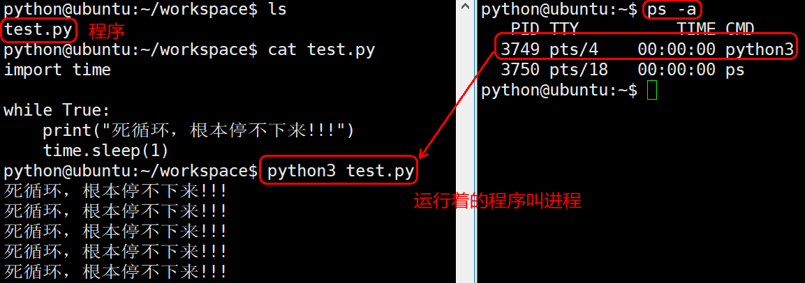</p>
<ul>
<li>&#x7A0B;&#x5E8F;&#x662F;&#x5B58;&#x653E;&#x5728;&#x5B58;&#x50A8;&#x4ECB;&#x8D28;&#x4E0A;&#x7684;&#x4E00;&#x4E2A;&#x6587;&#x4EF6;&#xFF0C;&#x800C;&#x8FDB;&#x7A0B;&#x662F;&#x7A0B;&#x5E8F;&#x6267;&#x884C;&#x7684;&#x8FC7;&#x7A0B;&#x3002;</li>
<li>&#x8FDB;&#x7A0B;&#x7684;&#x72B6;&#x6001;&#x662F;&#x53D8;&#x5316;&#x7684;&#xFF0C;&#x5176;&#x5305;&#x62EC;&#x8FDB;&#x7A0B;&#x7684;&#x521B;&#x5EFA;&#x3001;&#x8C03;&#x5EA6;&#x548C;&#x6D88;&#x4EA1;&#x3002;</li>
<li>&#x7A0B;&#x5E8F;&#x662F;&#x9759;&#x6001;&#x7684;&#xFF0C;&#x8FDB;&#x7A0B;&#x662F;&#x52A8;&#x6001;&#x7684;&#x3002;</li>
</ul>
<p>&#x64CD;&#x4F5C;&#x7CFB;&#x7EDF;&#x662F;&#x901A;&#x8FC7;&#x8FDB;&#x7A0B;&#x53BB;&#x5B8C;&#x6210;&#x4E00;&#x4E2A;&#x4E00;&#x4E2A;&#x7684;&#x4EFB;&#x52A1;&#xFF0C;<strong>&#x8FDB;&#x7A0B;&#x662F;&#x7BA1;&#x7406;&#x4E8B;&#x52A1;&#x7684;&#x57FA;&#x672C;&#x5355;&#x5143;&#xFF0C;&#x4E5F;&#x662F;&#x64CD;&#x4F5C;&#x7CFB;&#x7EDF;&#x5206;&#x914D;&#x8D44;&#x6E90;&#x7684;&#x57FA;&#x672C;&#x5355;&#x5143;</strong>&#x3002;</p>
<p>&#x8FDB;&#x7A0B;&#x62E5;&#x6709;&#x81EA;&#x5DF1;&#x72EC;&#x7ACB;&#x7684;&#x5904;&#x7406;&#x73AF;&#x5883;&#xFF08;&#x5982;&#xFF1A;&#x5F53;&#x524D;&#x9700;&#x8981;&#x7528;&#x5230;&#x54EA;&#x4E9B;&#x73AF;&#x5883;&#x53D8;&#x91CF;&#xFF0C;&#x7A0B;&#x5E8F;&#x8FD0;&#x884C;&#x7684;&#x76EE;&#x5F55;&#x5728;&#x54EA;&#xFF0C;&#x5F53;&#x524D;&#x662F;&#x54EA;&#x4E2A;&#x7528;&#x6237;&#x5728;&#x8FD0;&#x884C;&#x6B64;&#x7A0B;&#x5E8F;&#x7B49;&#xFF09;&#x548C;&#x7CFB;&#x7EDF;&#x8D44;&#x6E90;&#xFF08;&#x5982;&#xFF1A;&#x5904;&#x7406;&#x5668; CPU &#x5360;&#x7528;&#x7387;&#x3001;&#x5B58;&#x50A8;&#x5668;&#x3001;I/O&#x8BBE;&#x5907;&#x3001;&#x6570;&#x636E;&#x3001;&#x7A0B;&#x5E8F;&#xFF09;&#x3002;</p>
<p>&#x6211;&#x4EEC;&#x53EF;&#x4EE5;&#x8FD9;&#x4E48;&#x7406;&#x89E3;&#xFF0C;&#x516C;&#x53F8;&#x76F8;&#x5F53;&#x4E8E;&#x64CD;&#x4F5C;&#x7CFB;&#x7EDF;&#xFF0C;&#x90E8;&#x95E8;&#x76F8;&#x5F53;&#x4E8E;&#x8FDB;&#x7A0B;&#xFF0C;&#x516C;&#x53F8;&#x901A;&#x8FC7;&#x90E8;&#x95E8;&#x6765;&#x7BA1;&#x7406;&#xFF08;&#x7CFB;&#x7EDF;&#x901A;&#x8FC7;&#x8FDB;&#x7A0B;&#x7BA1;&#x7406;&#xFF09;&#xFF0C;&#x5BF9;&#x4E8E;&#x5404;&#x4E2A;&#x90E8;&#x95E8;&#xFF0C;&#x6BCF;&#x4E2A;&#x90E8;&#x95E8;&#x6709;&#x5404;&#x81EA;&#x7684;&#x8D44;&#x6E90;&#xFF0C;&#x5982;&#x684C;&#x5B50;&#x3001;&#x7535;&#x8111;&#x8BBE;&#x5907;&#x3001;&#x6253;&#x5370;&#x673A;&#x7B49;&#x3002;</p>
<h2 id="3312-&#x8FDB;&#x7A0B;&#x76F8;&#x5173;&#x547D;&#x4EE4;">3.3.1.2 &#x8FDB;&#x7A0B;&#x76F8;&#x5173;&#x547D;&#x4EE4;</h2>
<h3 id="1-ps">1) ps</h3>
<p>ps&#x547D;&#x4EE4;&#x53EF;&#x4EE5;&#x67E5;&#x770B;&#x8FDB;&#x7A0B;&#x7684;&#x8BE6;&#x7EC6;&#x72B6;&#x51B5;&#xFF0C;&#x5E38;&#x7528;&#x9009;&#x9879;(&#x9009;&#x9879;&#x53EF;&#x4EE5;&#x4E0D;&#x52A0;&#x201C;-&#x201D;)&#x5982;&#x4E0B;&#xFF1A;</p>
<table>
<thead>
<tr>
<th>&#x9009;&#x9879;</th>
<th>&#x542B;&#x4E49;</th>
</tr>
</thead>
<tbody>
<tr>
<td>-a</td>
<td>&#x663E;&#x793A;&#x7EC8;&#x7AEF;&#x4E0A;&#x7684;&#x6240;&#x6709;&#x8FDB;&#x7A0B;&#xFF0C;&#x5305;&#x62EC;&#x5176;&#x4ED6;&#x7528;&#x6237;&#x7684;&#x8FDB;&#x7A0B;</td>
</tr>
<tr>
<td>-u</td>
<td>&#x663E;&#x793A;&#x8FDB;&#x7A0B;&#x7684;&#x8BE6;&#x7EC6;&#x72B6;&#x6001;</td>
</tr>
<tr>
<td>-x</td>
<td>&#x663E;&#x793A;&#x6CA1;&#x6709;&#x63A7;&#x5236;&#x7EC8;&#x7AEF;&#x7684;&#x8FDB;&#x7A0B;</td>
</tr>
<tr>
<td>-j</td>
<td>&#x5217;&#x51FA;&#x4E0E;&#x4F5C;&#x4E1A;&#x63A7;&#x5236;&#x76F8;&#x5173;&#x7684;&#x4FE1;&#x606F;</td>
</tr>
</tbody>
</table>
<p>&#x663E;&#x793A;&#x5F53;&#x524D;&#x7528;&#x6237;&#x4E0B;&#x6240;&#x6709;&#x8FDB;&#x7A0B;&#xFF1A;<code>ps -aux</code></p>
<p>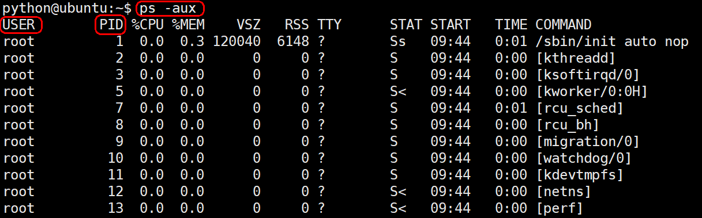</p>
<h3 id="2-kill">2) kill</h3>
<p>kill&#x547D;&#x4EE4;&#x529F;&#x80FD;: &#x53D1;&#x9001;&#x6307;&#x5B9A;&#x7684;&#x4FE1;&#x53F7;&#x5230;&#x76F8;&#x5E94;&#x8FDB;&#x7A0B;&#xFF0C;&#x5927;&#x90E8;&#x5206;&#x9ED8;&#x8BA4;&#x7684;&#x52A8;&#x4F5C;&#x662F;&#x7EC8;&#x6B62;&#x6307;&#x5B9A;&#x7684;&#x8FDB;&#x7A0B;&#x3002;</p>
<p>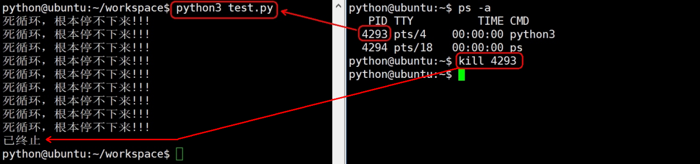</p>
<p>3.3.1.3 &#x8FDB;&#x7A0B;&#x72B6;&#x6001;
&#x5DE5;&#x4F5C;&#x4E2D;&#xFF0C;<strong>&#x4EFB;&#x52A1;&#x6570;&#x5F80;&#x5F80;&#x5927;&#x4E8E;cpu&#x7684;&#x6838;&#x6570;</strong>&#xFF0C;&#x5373;&#x4E00;&#x5B9A;&#x6709;&#x4E00;&#x4E9B;&#x4EFB;&#x52A1;&#x6B63;&#x5728;&#x6267;&#x884C;&#xFF0C;&#x800C;&#x53E6;&#x5916;&#x4E00;&#x4E9B;&#x4EFB;&#x52A1;&#x5728;&#x7B49;&#x5F85;cpu&#x8FDB;&#x884C;&#x6267;&#x884C;&#xFF0C;&#x56E0;&#x6B64;&#x5BFC;&#x81F4;&#x4E86;&#x6709;&#x4E86;&#x4E0D;&#x540C;&#x7684;&#x72B6;&#x6001;&#x3002;</p>
<p>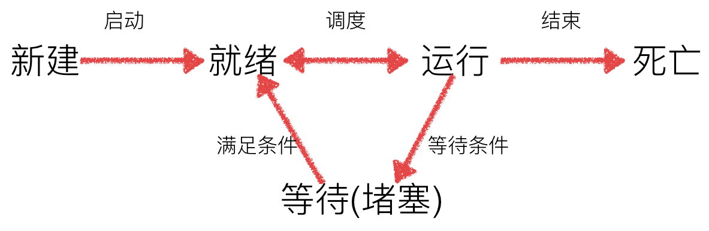</p>
<ul>
<li>&#x5C31;&#x7EEA;&#x6001;&#xFF1A;&#x8FD0;&#x884C;&#x7684;&#x6761;&#x4EF6;&#x90FD;&#x5DF2;&#x7ECF;&#x6162;&#x53BB;&#xFF0C;&#x6B63;&#x5728;&#x7B49;&#x5728;cpu&#x6267;&#x884C;</li>
<li>&#x6267;&#x884C;&#x6001;&#xFF1A;cpu&#x6B63;&#x5728;&#x6267;&#x884C;&#x5176;&#x529F;&#x80FD;</li>
<li>&#x7B49;&#x5F85;&#x6001;&#xFF1A;&#x7B49;&#x5F85;&#x67D0;&#x4E9B;&#x6761;&#x4EF6;&#x6EE1;&#x8DB3;&#xFF0C;&#x4F8B;&#x5982;&#x4E00;&#x4E2A;&#x7A0B;&#x5E8F;sleep&#x4E86;&#xFF0C;&#x6B64;&#x65F6;&#x5C31;&#x5904;&#x4E8E;&#x7B49;&#x5F85;&#x6001;</li>
</ul>
<p>&#x8FD9;&#x91CC;&#x9700;&#x8981;&#x6CE8;&#x610F;&#xFF0C;&#x5C31;&#x7EEA;&#x6001;&#x548C;&#x7B49;&#x5F85;&#x6001;&#x90FD;&#x662F;&#x4E0D;&#x6267;&#x884C;&#xFF0C;&#x4F46;&#x5B83;&#x4EEC;&#x662F;&#x6709;&#x533A;&#x522B;&#x7684;&#xFF0C;&#x5C31;&#x7EEA;&#x6001;&#x662F;&#x6307;&#x6EE1;&#x8DB3;&#x6761;&#x4EF6;&#xFF0C;&#x65F6;&#x95F4;&#x6CA1;&#x5230;&#xFF0C;&#x7B49;&#x5F85;&#x6001;&#x662F;&#x4E0D;&#x6EE1;&#x8DB3;&#x6761;&#x4EF6;&#x3002;</p>
<p>&#x4E3A;&#x4E86;&#x8BA9;&#x5927;&#x5BB6;&#x66F4;&#x597D;&#x5730;&#x8FD9;&#x4E09;&#x79CD;&#x72B6;&#x6001;&#x7684;&#x8F6C;&#x6362;&#xFF0C;&#x7ED9;&#x5927;&#x5BB6;&#x4E3E;&#x4E00;&#x4E2A;&#x4E70;&#x706B;&#x8F66;&#x7968;&#x7684;&#x4F8B;&#x5B50;&#x3002;</p>
<p>Mike &#x5306;&#x5FD9;&#x5730;&#x8D76;&#x53BB;&#x706B;&#x8F66;&#x7AD9;&#x4E70;&#x706B;&#x8F66;&#x7968;&#xFF0C;&#x592A;&#x7740;&#x6025;&#x4E86;&#xFF0C;&#x5230;&#x4E86;&#x552E;&#x7968;&#x5385;&#x624D;&#x53D1;&#x73B0;&#x5FD8;&#x8BB0;&#x5E26;&#x8EAB;&#x4EFD;&#x8BC1;&#xFF0C;&#x8FD9;&#x65F6;&#x5019;&#xFF0C;&#x5C31;&#x7B97; Mike &#x6392;&#x961F;&#x4E5F;&#x6CA1;&#x7528;&#xFF0C;&#x56E0;&#x4E3A; Mike &#x4E0D;&#x5177;&#x5907;&#x4E70;&#x7968;&#x7684;&#x6761;&#x4EF6;&#xFF08;&#x6CA1;&#x5E26;&#x8EAB;&#x4EFD;&#x8BC1;&#xFF09;&#xFF0C;&#x8FD9;&#x65F6;&#x5019;&#x7684; Mike &#x5C5E;&#x4E8E;&#x7B49;&#x5F85;&#x6001;&#x3002;</p>
<p>Mike &#x7ED9;&#x5B83;&#x5BF9;&#x8C61;&#x6253;&#x7535;&#x8BDD;&#xFF0C;&#x8BA9;&#x5979;&#x628A;&#x8EAB;&#x4EFD;&#x8BC1;&#x5E26;&#x8FC7;&#x6765;&#xFF0C;&#x7B49;&#x4F1A;&#xFF0C;&#x8EAB;&#x4EFD;&#x8BC1;&#x9001;&#x5230;&#x4E86;&#xFF0C;&#x8FD9;&#x65F6;&#x5019;&#xFF0C;Mike &#x53EF;&#x4EE5;&#x53BB;&#x6392;&#x961F;&#x4E70;&#x7968;&#x4E86;&#xFF0C;&#x53EA;&#x662F;&#x65F6;&#x95F4;&#x5230;&#xFF0C;Mike &#x5C31;&#x53EF;&#x4EE5;&#x4E70;&#x7968;&#x4E86;&#xFF0C;&#x8FD9;&#x65F6;&#xFF0C;Mike &#x5C5E;&#x4E8E;&#x5C31;&#x7EEA;&#x6001;&#x3002;&#x800C;&#x8FD9;&#x8FC7;&#x7A0B;&#x662F;&#x7531;&#x7B49;&#x5F85;&#x6001;&#x8F6C;&#x6362;&#x5230;&#x5C31;&#x7EEA;&#x6001;&#x3002;</p>
<p>&#x7B49;&#x4E86; 10 &#x5206;&#x949F;&#xFF0C;&#x7EC8;&#x4E8E;&#x5230; Mike &#x4E86;&#xFF0C;Mike &#x5F00;&#x59CB;&#x4E70;&#x7968;&#xFF0C;&#x8FD9;&#x65F6;&#x5019;&#xFF0C; Mike &#x5C5E;&#x4E8E;&#x6267;&#x884C;&#x6001;&#x3002;&#x800C;&#x8FD9;&#x8FC7;&#x7A0B;&#x662F;&#x7531;&#x5C31;&#x7EEA;&#x6001;&#x8F6C;&#x6362;&#x4E3A;&#x6267;&#x884C;&#x6001;&#x3002;</p>
<p>&#x800C;&#x5728;&#x4E70;&#x7968;&#x7684;&#x8FC7;&#x7A0B;&#x4E2D;&#xFF0C;Mike &#x7684;&#x5BF9;&#x8C61;&#x6253;&#x7535;&#x8BDD;&#x7ED9;&#x4ED6;&#xFF0C;&#x8BA9; Mike &#x4E5F;&#x5E2E;&#x5979;&#x4E70;&#x4E00;&#x5F20;&#x706B;&#x8F66;&#x7968;&#xFF0C;&#x4F46;&#x662F;&#xFF0C; Mike &#x6CA1;&#x6709;&#x5979;&#x5BF9;&#x8C61;&#x7684;&#x8EAB;&#x4EFD;&#x8BC1;&#xFF0C;&#x63A5;&#x7740;&#xFF0C;Mike &#x7EE7;&#x7EED;&#x7B49;&#x4ED6;&#x5BF9;&#x8C61;&#x9001;&#x8EAB;&#x4EFD;&#x8BC1;&#xFF0C;&#x8FD9;&#x65F6;&#x5019;&#xFF0C;Mike&#x7531;&#x6267;&#x884C;&#x6001;&#x8F6C;&#x6362;&#x4E3A;&#x7B49;&#x5F85;&#x6001;&#x3002;</p>
<p>&#x5047;&#x5982;&#x662F;&#x8FD9;&#x4E48;&#x4E00;&#x79CD;&#x60C5;&#x51B5;&#xFF0C;Mike &#x4E70;&#x706B;&#x8F66;&#x7968;&#x662F;&#x7ED9;&#x516C;&#x53F8;&#x7684;&#x540C;&#x4E8B;&#x4E70;&#x7684;&#xFF08;&#x9700;&#x8981;&#x4E70; 100 &#x591A;&#x5F20;&#x7968;&#xFF09;&#xFF0C;&#x5728;&#x4E70;&#x7740;&#x7968;&#x7684;&#x8FC7;&#x7A0B;&#x4E2D;&#xFF08;&#x6267;&#x884C;&#x6001;&#xFF09;&#xFF0C;&#x540E;&#x9762;&#x8FD8;&#x6709;&#x5F88;&#x591A;&#x4EBA;&#x5728;&#x6392;&#x961F;&#xFF0C;&#x540E;&#x9762;&#x6392;&#x961F;&#x7684;&#x4EBA;&#x80AF;&#x5B9A;&#x4E0D;&#x723D;&#xFF0C;&#x8FD9;&#x65F6;&#x552E;&#x7968;&#x5458;&#x5C31;&#x8BF4;&#xFF0C;20&#x5206;&#x949F;&#x540E;&#xFF0C;&#x5982;&#x679C;&#x4F60;&#x8FD8;&#x6CA1;&#x5904;&#x7406;&#x5B8C;&#xFF0C;&#x8BF7;&#x4F60;&#x5230;&#x540E;&#x9762;&#x6392;&#x961F;&#x3002;&#x7ED3;&#x679C;&#xFF0C;Mike &#x82B1;&#x4E86; 20 &#x5206;&#x949F;&#x8FD8;&#x662F;&#x6CA1;&#x6709;&#x5904;&#x7406;&#x5B8C;&#xFF0C;&#x4E8E;&#x662F;&#xFF0C;&#x4E56;&#x4E56;&#x5730;&#x5230;&#x540E;&#x9762;&#x91CD;&#x65B0;&#x6392;&#x961F;&#xFF0C;&#x8FD9;&#x65F6;&#x5019;&#xFF0C;Mike&#x7531;&#x6267;&#x884C;&#x6001;&#x8F6C;&#x6362;&#x4E3A;&#x5C31;&#x7EEA;&#x6001;&#x3002;</p>
<h1 id="332-&#x8FDB;&#x7A0B;&#x7684;&#x4F7F;&#x7528;">3.3.2 &#x8FDB;&#x7A0B;&#x7684;&#x4F7F;&#x7528;</h1>
<p>multiprocessing&#x6A21;&#x5757;&#x5C31;&#x662F;&#x8DE8;&#x5E73;&#x53F0;&#x7248;&#x672C;&#x7684;&#x591A;&#x8FDB;&#x7A0B;&#x6A21;&#x5757;&#xFF0C;&#x63D0;&#x4F9B;&#x4E86;&#x4E00;&#x4E2A;Process&#x7C7B;&#x6765;&#x4EE3;&#x8868;&#x4E00;&#x4E2A;&#x8FDB;&#x7A0B;&#x5BF9;&#x8C61;&#xFF0C;&#x8FD9;&#x4E2A;&#x5BF9;&#x8C61;&#x53EF;&#x4EE5;&#x7406;&#x89E3;&#x4E3A;&#x662F;&#x4E00;&#x4E2A;&#x72EC;&#x7ACB;&#x7684;&#x8FDB;&#x7A0B;&#xFF0C;&#x53EF;&#x4EE5;&#x6267;&#x884C;&#x53E6;&#x5916;&#x7684;&#x4E8B;&#x60C5;&#x3002;</p>
<h2 id="3321-&#x591A;&#x8FDB;&#x7A0B;&#x5B9E;&#x73B0;&#x591A;&#x4EFB;&#x52A1;">3.3.2.1 &#x591A;&#x8FDB;&#x7A0B;&#x5B9E;&#x73B0;&#x591A;&#x4EFB;&#x52A1;</h2>
<h3 id="1-&#x793A;&#x4F8B;&#x4EE3;&#x7801;">1) &#x793A;&#x4F8B;&#x4EE3;&#x7801;</h3>
<pre><code>import time
import multiprocessing

def test1():
    while True:
        print(&quot;-----test1-----&quot;)
        time.sleep(1)

def test2():
    while True:
        print(&quot;-----test2-----&quot;)
        time.sleep(1)


# &#x6307;&#x5B9A;&#x8FDB;&#x7A0B;&#x5904;&#x7406;&#x51FD;&#x6570;
p1 = multiprocessing.Process(target=test1)
p2 = multiprocessing.Process(target=test2)

# &#x542F;&#x52A8;&#x8FDB;&#x7A0B;
p1.start()
p2.start()
</code></pre><p>&#x521B;&#x5EFA;&#x5B50;&#x8FDB;&#x7A0B;&#x65F6;&#xFF0C;&#x53EA;&#x9700;&#x8981;&#x4F20;&#x5165;&#x4E00;&#x4E2A;&#x6267;&#x884C;&#x51FD;&#x6570;&#x548C;&#x51FD;&#x6570;&#x7684;&#x53C2;&#x6570;&#xFF0C;&#x521B;&#x5EFA;&#x4E00;&#x4E2A;Process&#x5B9E;&#x4F8B;&#xFF0C;&#x7528;start()&#x65B9;&#x6CD5;&#x542F;&#x52A8;&#x3002;</p>
<p>&#x6267;&#x884C;&#x7ED3;&#x679C;&#xFF1A;
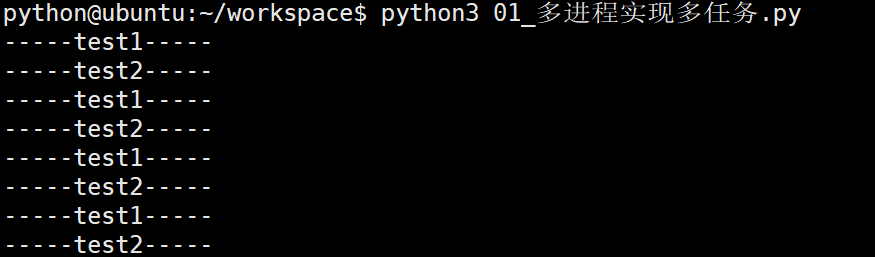</p>
<h3 id="2-process&#x8BED;&#x6CD5;">2) Process&#x8BED;&#x6CD5;</h3>
<p><strong>Process&#x8BED;&#x6CD5;&#x7ED3;&#x6784;&#x5982;&#x4E0B;&#xFF1A;</strong></p>
<pre><code>multiprocessing.Process(group=None, target=None, name=None, args=(), kwargs={}, *, daemon=None)
</code></pre><ul>
<li>group&#xFF1A;&#x6307;&#x5B9A;&#x8FDB;&#x7A0B;&#x7EC4;&#xFF0C;&#x5927;&#x591A;&#x6570;&#x60C5;&#x51B5;&#x4E0B;&#x7528;&#x4E0D;&#x5230;</li>
<li>target&#xFF1A;&#x5982;&#x679C;&#x4F20;&#x9012;&#x4E86;&#x51FD;&#x6570;&#x7684;&#x5F15;&#x7528;&#xFF0C;&#x53EF;&#x4EE5;&#x4EFB;&#x52A1;&#x8FD9;&#x4E2A;&#x5B50;&#x8FDB;&#x7A0B;&#x5C31;&#x6267;&#x884C;&#x8FD9;&#x91CC;&#x7684;&#x4EE3;&#x7801;</li>
<li>name&#xFF1A;&#x7ED9;&#x8FDB;&#x7A0B;&#x8BBE;&#x5B9A;&#x4E00;&#x4E2A;&#x540D;&#x5B57;&#xFF0C;&#x53EF;&#x4EE5;&#x4E0D;&#x8BBE;&#x5B9A;</li>
<li>args&#xFF1A;&#x7ED9;target&#x6307;&#x5B9A;&#x7684;&#x51FD;&#x6570;&#x4F20;&#x9012;&#x7684;&#x53C2;&#x6570;&#xFF0C;&#x4EE5;&#x5143;&#x7EC4;&#x7684;&#x65B9;&#x5F0F;&#x4F20;&#x9012;</li>
<li>kwargs&#xFF1A;&#x7ED9;target&#x6307;&#x5B9A;&#x7684;&#x51FD;&#x6570;&#x4F20;&#x9012;&#x547D;&#x540D;&#x53C2;&#x6570;</li>
<li>daemon&#xFF1A;&#x662F;&#x5426;&#x4EE5;&#x5B88;&#x62A4;&#x8FDB;&#x7A0B;&#x8FD0;&#x884C;&#xFF0C;True &#x6216;False</li>
</ul>
<p><strong>Process&#x521B;&#x5EFA;&#x7684;&#x5B9E;&#x4F8B;&#x5BF9;&#x8C61;&#x7684;&#x5E38;&#x7528;&#x65B9;&#x6CD5;&#xFF1A;</strong></p>
<ul>
<li>start()&#xFF1A;&#x542F;&#x52A8;&#x5B50;&#x8FDB;&#x7A0B;&#x5B9E;&#x4F8B;&#xFF08;&#x521B;&#x5EFA;&#x5B50;&#x8FDB;&#x7A0B;&#xFF09;</li>
<li>is_alive()&#xFF1A;&#x5224;&#x65AD;&#x8FDB;&#x7A0B;&#x5B50;&#x8FDB;&#x7A0B;&#x662F;&#x5426;&#x8FD8;&#x5728;&#x6D3B;&#x7740;</li>
<li>join([timeout])&#xFF1A;&#x662F;&#x5426;&#x7B49;&#x5F85;&#x5B50;&#x8FDB;&#x7A0B;&#x6267;&#x884C;&#x7ED3;&#x675F;&#xFF0C;&#x6216;&#x7B49;&#x5F85;&#x591A;&#x5C11;&#x79D2;</li>
<li>terminate()&#xFF1A;&#x4E0D;&#x7BA1;&#x4EFB;&#x52A1;&#x662F;&#x5426;&#x5B8C;&#x6210;&#xFF0C;&#x7ACB;&#x5373;&#x7EC8;&#x6B62;&#x5B50;&#x8FDB;&#x7A0B;</li>
</ul>
<p><strong>Process&#x521B;&#x5EFA;&#x7684;&#x5B9E;&#x4F8B;&#x5BF9;&#x8C61;&#x7684;&#x5E38;&#x7528;&#x5C5E;&#x6027;&#xFF1A;</strong></p>
<ul>
<li>name&#xFF1A;&#x5F53;&#x524D;&#x8FDB;&#x7A0B;&#x7684;&#x522B;&#x540D;&#xFF0C;&#x9ED8;&#x8BA4;&#x4E3A;Process-N&#xFF0C;N&#x4E3A;&#x4ECE;1&#x5F00;&#x59CB;&#x9012;&#x589E;&#x7684;&#x6574;&#x6570;</li>
<li>pid&#xFF1A;&#x5F53;&#x524D;&#x8FDB;&#x7A0B;&#x7684;pid&#xFF08;&#x8FDB;&#x7A0B;&#x53F7;&#xFF09;</li>
</ul>
<h2 id="3322-&#x8FDB;&#x7A0B;&#x53F7;">3.3.2.2 &#x8FDB;&#x7A0B;&#x53F7;</h2>
<p>&#x6BCF;&#x4E2A;&#x8FDB;&#x7A0B;&#x90FD;&#x7531;&#x4E00;&#x4E2A;&#x8FDB;&#x7A0B;&#x53F7;&#x6765;&#x6807;&#x8BC6;&#xFF0C;&#x8FDB;&#x7A0B;&#x53F7;&#x603B;&#x662F;&#x552F;&#x4E00;&#x7684;&#x3002;</p>
<p>&#x793A;&#x4F8B;&#x4EE3;&#x7801;&#xFF1A;</p>
<pre><code>import multiprocessing
import os

def func():
    pid = os.getpid() # &#x83B7;&#x53D6;&#x8FDB;&#x7A0B;&#x53F7;
    ppid = os.getppid() # &#x83B7;&#x53D6;&#x7236;&#x8FDB;&#x7A0B;
    print(&quot;&#x5B50;&#x8FDB;&#x7A0B;&#x53F7;&#xFF1A;%d, &#x5176;&#x7236;&#x8FDB;&#x7A0B;&#x53F7;&#xFF1A;%d&quot; % (pid, ppid))


def main():
    # &#x83B7;&#x53D6;&#x5F53;&#x524D;&#x8FDB;&#x7A0B;&#x53F7;
    pid = os.getpid()
    print(&quot;&#x4E3B;&#x8FDB;&#x7A0B;&#x7684;&#x8FDB;&#x7A0B;&#x53F7;&#xFF1A;&quot;, pid)

    # &#x521B;&#x5EFA;&#x5B50;&#x8FDB;&#x7A0B;
    p = multiprocessing.Process(target=func)

    # &#x542F;&#x52A8;&#x8FDB;&#x7A0B;
    p.start()


if __name__ == &quot;__main__&quot;:
    main()
</code></pre><p>&#x6267;&#x884C;&#x7ED3;&#x679C;&#xFF1A;
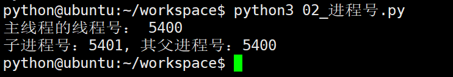</p>
<h2 id="3323-&#x7ED9;&#x5B50;&#x8FDB;&#x7A0B;&#x6307;&#x5B9A;&#x7684;&#x51FD;&#x6570;&#x4F20;&#x9012;&#x53C2;&#x6570;">3.3.2.3 &#x7ED9;&#x5B50;&#x8FDB;&#x7A0B;&#x6307;&#x5B9A;&#x7684;&#x51FD;&#x6570;&#x4F20;&#x9012;&#x53C2;&#x6570;</h2>
<p>&#x793A;&#x4F8B;&#x4EE3;&#x7801;&#xFF1A;</p>
<pre><code>import multiprocessing

def runProc(*args, **kwargs):
    print(args, kwargs)


#&#x521B;&#x5EFA;&#x5B50;&#x8FDB;&#x7A0B;&#xFF0C;&#x5E76;&#x4F20;&#x9012;&#x6307;&#x5B9A;&#x53C2;&#x6570;
p = multiprocessing.Process(target=runProc, args=(&apos;test&apos;,18), kwargs={&quot;name&quot;: &quot;mike&quot;})
p.start() #&#x542F;&#x52A8;&#x5B50;&#x8FDB;&#x7A0B;

p.join() #&#x7B49;&#x5F85;&#x5B50;&#x8FDB;&#x7A0B;&#x6267;&#x884C;&#x7ED3;&#x675F;
print(&quot;it is over!!!&quot;)
</code></pre><p>&#x6267;&#x884C;&#x7ED3;&#x679C;&#xFF1A;
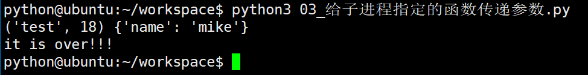</p>
<h2 id="3324-&#x8FDB;&#x7A0B;&#x95F4;&#x4E0D;&#x540C;&#x4EAB;&#x5168;&#x5C40;&#x53D8;&#x91CF;">3.3.2.4 &#x8FDB;&#x7A0B;&#x95F4;&#x4E0D;&#x540C;&#x4EAB;&#x5168;&#x5C40;&#x53D8;&#x91CF;</h2>
<p>&#x793A;&#x4F8B;&#x4EE3;&#x7801;&#xFF1A;</p>
<pre><code>import multiprocessing

g_nums = [11, 22, 33]

def work1():
    g_nums.append(44)
    print(&quot;-----work1----&quot;, g_nums)


def work2():
    print(&quot;-----work2----&quot;, g_nums)


#&#x5B50;&#x8FDB;&#x7A0B;1
p1 = multiprocessing.Process(target=work1)
p1.start()

p1.join() #&#x7B49;&#x5F85;p1&#x8FDB;&#x7A0B;&#x7ED3;&#x675F;

#&#x5B50;&#x8FDB;&#x7A0B;2
p2 = multiprocessing.Process(target=work2)
p2.start()
</code></pre><p>&#x6267;&#x884C;&#x7ED3;&#x679C;&#xFF1A;
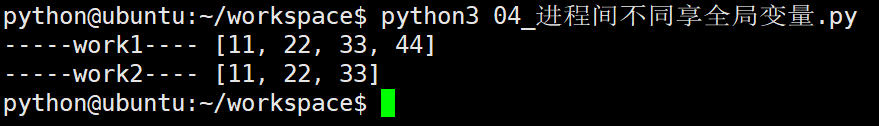</p>
<h1 id="333-&#x8FDB;&#x7A0B;&#x548C;&#x7EBF;&#x7A0B;&#x7684;&#x533A;&#x522B;">3.3.3 &#x8FDB;&#x7A0B;&#x548C;&#x7EBF;&#x7A0B;&#x7684;&#x533A;&#x522B;</h1>
<h2 id="3331-&#x529F;&#x80FD;">3.3.3.1 &#x529F;&#x80FD;</h2>
<ul>
<li>&#x8FDB;&#x7A0B;&#xFF0C;&#x80FD;&#x591F;&#x5B8C;&#x6210;&#x591A;&#x4EFB;&#x52A1;&#xFF0C;&#x6BD4;&#x5982;&#x5728;&#x4E00;&#x53F0;&#x7535;&#x8111;&#x4E0A;&#x80FD;&#x591F;&#x540C;&#x65F6;&#x8FD0;&#x884C;&#x591A;&#x4E2A;QQ</li>
<li>&#x7EBF;&#x7A0B;&#xFF0C;&#x80FD;&#x591F;&#x5B8C;&#x6210;&#x591A;&#x4EFB;&#x52A1;&#xFF0C;&#x6BD4;&#x5982;&#x4E00;&#x4E2A;QQ&#x4E2D;&#x7684;&#x591A;&#x4E2A;&#x804A;&#x5929;&#x7A97;&#x53E3;</li>
</ul>
<p></p>
<h2 id="3332-&#x5B9A;&#x4E49;&#x7684;&#x4E0D;&#x540C;">3.3.3.2 &#x5B9A;&#x4E49;&#x7684;&#x4E0D;&#x540C;</h2>
<ul>
<li>&#x8FDB;&#x7A0B;&#x662F;&#x7CFB;&#x7EDF;&#x8FDB;&#x884C;&#x8D44;&#x6E90;&#x5206;&#x914D;&#x548C;&#x8C03;&#x5EA6;&#x7684;&#x4E00;&#x4E2A;&#x72EC;&#x7ACB;&#x5355;&#x4F4D;</li>
<li>&#x7EBF;&#x7A0B;&#x662F;&#x8FDB;&#x7A0B;&#x7684;&#x4E00;&#x4E2A;&#x5B9E;&#x4F53;&#xFF0C;&#x662F;CPU&#x8C03;&#x5EA6;&#x548C;&#x5206;&#x6D3E;&#x7684;&#x57FA;&#x672C;&#x5355;&#x4F4D;&#xFF0C;&#x5B83;&#x662F;&#x6BD4;&#x8FDB;&#x7A0B;&#x66F4;&#x5C0F;&#x7684;&#x80FD;&#x72EC;&#x7ACB;&#x8FD0;&#x884C;&#x7684;&#x57FA;&#x672C;&#x5355;&#x4F4D;&#x3002;&#x7EBF;&#x7A0B;&#x81EA;&#x5DF1;&#x57FA;&#x672C;&#x4E0A;&#x4E0D;&#x62E5;&#x6709;&#x7CFB;&#x7EDF;&#x8D44;&#x6E90;&#xFF0C;&#x53EA;&#x62E5;&#x6709;&#x4E00;&#x70B9;&#x5728;&#x8FD0;&#x884C;&#x4E2D;&#x5FC5;&#x4E0D;&#x53EF;&#x5C11;&#x7684;&#x8D44;&#x6E90;(&#x5982;&#x7A0B;&#x5E8F;&#x8BA1;&#x6570;&#x5668;&#xFF0C;&#x4E00;&#x7EC4;&#x5BC4;&#x5B58;&#x5668;&#x548C;&#x6808;)&#xFF0C;&#x4F46;&#x662F;&#x5B83;&#x53EF;&#x4E0E;&#x540C;&#x5C5E;&#x4E00;&#x4E2A;&#x8FDB;&#x7A0B;&#x7684;&#x5176;&#x4ED6;&#x7684;&#x7EBF;&#x7A0B;&#x5171;&#x4EAB;&#x8FDB;&#x7A0B;&#x6240;&#x62E5;&#x6709;&#x7684;&#x5168;&#x90E8;&#x8D44;&#x6E90;&#x3002;</li>
</ul>
<h2 id="3333-&#x533A;&#x522B;">3.3.3.3 &#x533A;&#x522B;</h2>
<p>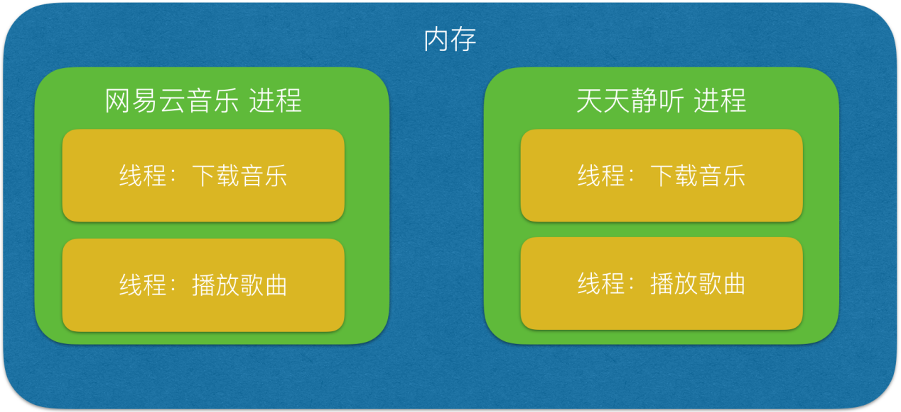</p>
<ul>
<li>&#x4E00;&#x4E2A;&#x7A0B;&#x5E8F;&#x81F3;&#x5C11;&#x6709;&#x4E00;&#x4E2A;&#x8FDB;&#x7A0B;&#xFF0C;&#x4E00;&#x4E2A;&#x8FDB;&#x7A0B;&#x81F3;&#x5C11;&#x6709;&#x4E00;&#x4E2A;&#x7EBF;&#x7A0B;</li>
<li>&#x7EBF;&#x7A0B;&#x7684;&#x5212;&#x5206;&#x5C3A;&#x5EA6;&#x5C0F;&#x4E8E;&#x8FDB;&#x7A0B;(&#x8D44;&#x6E90;&#x6BD4;&#x8FDB;&#x7A0B;&#x5C11;)&#xFF0C;&#x4F7F;&#x5F97;&#x591A;&#x7EBF;&#x7A0B;&#x7A0B;&#x5E8F;&#x7684;&#x5E76;&#x53D1;&#x6027;&#x9AD8;</li>
<li>&#x8FDB;&#x7A0B;&#x5728;&#x6267;&#x884C;&#x8FC7;&#x7A0B;&#x4E2D;&#x62E5;&#x6709;&#x72EC;&#x7ACB;&#x7684;&#x5185;&#x5B58;&#x5355;&#x5143;&#xFF0C;&#x800C;&#x591A;&#x4E2A;&#x7EBF;&#x7A0B;&#x5171;&#x4EAB;&#x5185;&#x5B58;&#xFF0C;&#x4ECE;&#x800C;&#x6781;&#x5927;&#x5730;&#x63D0;&#x9AD8;&#x4E86;&#x7A0B;&#x5E8F;&#x7684;&#x8FD0;&#x884C;&#x6548;&#x7387;</li>
<li>&#x7EBF;&#x7EBF;&#x7A0B;&#x4E0D;&#x80FD;&#x591F;&#x72EC;&#x7ACB;&#x6267;&#x884C;&#xFF0C;&#x5FC5;&#x987B;&#x4F9D;&#x5B58;&#x5728;&#x8FDB;&#x7A0B;&#x4E2D;</li>
</ul>
<p>&#x4E3E;&#x4E2A;&#x73B0;&#x5B9E;&#x4E2D;&#x751F;&#x6D3B;&#x4F8B;&#x5B50;&#x6765;&#x8BF4;&#x660E;&#x4E00;&#x4E0B;&#x8FDB;&#x7A0B;&#x548C;&#x7EBF;&#x7A0B;&#x7684;&#x5173;&#x7CFB;&#xFF1A;</p>
<ul>
<li>&#x5982;&#x679C;&#x8BF4;&#x8FDB;&#x7A0B;&#x662F;&#x4E00;&#x4E2A;&#x8D44;&#x6E90;&#x7BA1;&#x5BB6;&#xFF0C;&#x8D1F;&#x8D23;&#x4ECE;&#x4E3B;&#x4EBA;&#x90A3;&#x91CC;&#x8981;&#x8D44;&#x6E90;&#x7684;&#x8BDD;&#xFF0C;&#x90A3;&#x4E48;&#x7EBF;&#x7A0B;&#x5C31;&#x662F;&#x5E72;&#x6D3B;&#x7684;&#x82E6;&#x529B;&#x3002;</li>
<li>&#x4E00;&#x4E2A;&#x7BA1;&#x5BB6;&#x5FC5;&#x987B;&#x5B8C;&#x6210;&#x4E00;&#x9879;&#x5DE5;&#x4F5C;&#xFF0C;&#x5C31;&#x9700;&#x8981;&#x6700;&#x5C11;&#x4E00;&#x4E2A;&#x82E6;&#x529B;&#xFF0C;&#x4E5F;&#x5C31;&#x662F;&#x8BF4;&#xFF0C;&#x4E00;&#x4E2A;&#x8FDB;&#x7A0B;&#x6700;&#x5C11;&#x5305;&#x542B;&#x4E00;&#x4E2A;&#x7EBF;&#x7A0B;&#xFF0C;&#x4E5F;&#x53EF;&#x4EE5;&#x5305;&#x542B;&#x591A;&#x4E2A;&#x7EBF;&#x7A0B;&#x3002;</li>
<li>&#x82E6;&#x529B;&#x8981;&#x5E72;&#x6D3B;&#xFF0C;&#x5C31;&#x9700;&#x8981;&#x4F9D;&#x6258;&#x4E8E;&#x7BA1;&#x5BB6;&#xFF0C;&#x6240;&#x4EE5;&#x8BF4;&#x4E00;&#x4E2A;&#x7EBF;&#x7A0B;&#xFF0C;&#x5FC5;&#x987B;&#x5C5E;&#x4E8E;&#x67D0;&#x4E00;&#x4E2A;&#x8FDB;&#x7A0B;&#x3002;</li>
</ul>
<h2 id="3334-&#x4F18;&#x7F3A;&#x70B9;">3.3.3.4 &#x4F18;&#x7F3A;&#x70B9;</h2>
<p>&#x7EBF;&#x7A0B;&#x548C;&#x8FDB;&#x7A0B;&#x5728;&#x4F7F;&#x7528;&#x4E0A;&#x5404;&#x6709;&#x4F18;&#x7F3A;&#x70B9;&#xFF1A;&#x7EBF;&#x7A0B;&#x6267;&#x884C;&#x5F00;&#x9500;&#x5C0F;&#xFF0C;&#x4F46;&#x4E0D;&#x5229;&#x4E8E;&#x8D44;&#x6E90;&#x7684;&#x7BA1;&#x7406;&#x548C;&#x4FDD;&#x62A4;&#xFF1B;&#x800C;&#x8FDB;&#x7A0B;&#x6B63;&#x76F8;&#x53CD;&#x3002;</p>
<h1 id="334-&#x8FDB;&#x7A0B;&#x95F4;&#x901A;&#x4FE1;&#xFF1A;queue">3.3.4 &#x8FDB;&#x7A0B;&#x95F4;&#x901A;&#x4FE1;&#xFF1A;Queue</h1>
<p>&#x8FDB;&#x7A0B;&#x662F;&#x4E00;&#x4E2A;&#x72EC;&#x7ACB;&#x7684;&#x8D44;&#x6E90;&#x5206;&#x914D;&#x5355;&#x5143;&#xFF0C;&#x4E0D;&#x540C;&#x8FDB;&#x7A0B;&#xFF08;&#x8FD9;&#x91CC;&#x6240;&#x8BF4;&#x7684;&#x8FDB;&#x7A0B;&#x901A;&#x5E38;&#x6307;&#x7684;&#x662F;&#x7528;&#x6237;&#x8FDB;&#x7A0B;&#xFF09;&#x4E4B;&#x95F4;&#x7684;&#x8D44;&#x6E90;&#x662F;&#x72EC;&#x7ACB;&#x7684;&#xFF0C;&#x6CA1;&#x6709;&#x5173;&#x8054;&#xFF0C;&#x4E0D;&#x80FD;&#x5728;&#x4E00;&#x4E2A;&#x8FDB;&#x7A0B;&#x4E2D;&#x76F4;&#x63A5;&#x8BBF;&#x95EE;&#x53E6;&#x4E00;&#x4E2A;&#x8FDB;&#x7A0B;&#x7684;&#x8D44;&#x6E90;&#x3002;</p>
<p>&#x4F46;&#x662F;&#xFF0C;&#x8FDB;&#x7A0B;&#x4E0D;&#x662F;&#x5B64;&#x7ACB;&#x7684;&#xFF0C;&#x4E0D;&#x540C;&#x7684;&#x8FDB;&#x7A0B;&#x9700;&#x8981;&#x8FDB;&#x884C;&#x4FE1;&#x606F;&#x7684;&#x4EA4;&#x4E92;&#x548C;&#x72B6;&#x6001;&#x7684;&#x4F20;&#x9012;&#x7B49;&#xFF0C;&#x56E0;&#x6B64;&#x9700;&#x8981;&#x8FDB;&#x7A0B;&#x95F4;&#x901A;&#x4FE1;( IPC&#xFF1A;Inter Processes Communication )&#x3002;</p>
<h2 id="3341-queue&#x7684;&#x4F7F;&#x7528;">3.3.4.1 Queue&#x7684;&#x4F7F;&#x7528;</h2>
<p>&#x53EF;&#x4EE5;&#x4F7F;&#x7528;multiprocessing&#x6A21;&#x5757;&#x7684;Queue&#x5B9E;&#x73B0;&#x591A;&#x8FDB;&#x7A0B;&#x4E4B;&#x95F4;&#x7684;&#x6570;&#x636E;&#x4F20;&#x9012;&#xFF0C;Queue&#x672C;&#x8EAB;&#x662F;&#x4E00;&#x4E2A;&#x6D88;&#x606F;&#x5217;&#x961F;&#x7A0B;&#x5E8F;&#xFF0C;&#x9996;&#x5148;&#x7528;&#x4E00;&#x4E2A;&#x5C0F;&#x5B9E;&#x4F8B;&#x6765;&#x6F14;&#x793A;&#x4E00;&#x4E0B;Queue&#x7684;&#x5DE5;&#x4F5C;&#x539F;&#x7406;&#x3002;</p>
<h3 id="1-&#x793A;&#x4F8B;&#x4EE3;&#x7801;">1) &#x793A;&#x4F8B;&#x4EE3;&#x7801;</h3>
<p>&#x793A;&#x4F8B;&#x4EE3;&#x7801;&#xFF1A;</p>
<pre><code>import multiprocessing

q = multiprocessing.Queue(3) #&#x521D;&#x59CB;&#x5316;&#x4E00;&#x4E2A;Queue&#x5BF9;&#x8C61;&#xFF0C;&#x6700;&#x591A;&#x53EF;&#x63A5;&#x6536;&#x4E09;&#x6761;put&#x6D88;&#x606F;
q.put(&quot;&#x6D88;&#x606F;1&quot;) 
q.put(&quot;&#x6D88;&#x606F;2&quot;)
print(q.full())  #False

q.put(&quot;&#x6D88;&#x606F;3&quot;)
print(q.full()) #True

#&#x56E0;&#x4E3A;&#x6D88;&#x606F;&#x5217;&#x961F;&#x5DF2;&#x6EE1;&#x4E0B;&#x9762;&#x7684;try&#x90FD;&#x4F1A;&#x629B;&#x51FA;&#x5F02;&#x5E38;&#xFF0C;&#x7B2C;&#x4E00;&#x4E2A;try&#x4F1A;&#x7B49;&#x5F85;2&#x79D2;&#x540E;&#x518D;&#x629B;&#x51FA;&#x5F02;&#x5E38;&#xFF0C;&#x7B2C;&#x4E8C;&#x4E2A;Try&#x4F1A;&#x7ACB;&#x523B;&#x629B;&#x51FA;&#x5F02;&#x5E38;
try:
    q.put(&quot;&#x6D88;&#x606F;4&quot;, True, 2)
except:
    print(&quot;&#x6D88;&#x606F;&#x5217;&#x961F;&#x5DF2;&#x6EE1;&#xFF0C;&#x73B0;&#x6709;&#x6D88;&#x606F;&#x6570;&#x91CF;:%s&quot;%q.qsize())

try:
    q.put_nowait(&quot;&#x6D88;&#x606F;4&quot;)
except:
    print(&quot;&#x6D88;&#x606F;&#x5217;&#x961F;&#x5DF2;&#x6EE1;&#xFF0C;&#x73B0;&#x6709;&#x6D88;&#x606F;&#x6570;&#x91CF;:%s&quot;%q.qsize())

#&#x63A8;&#x8350;&#x7684;&#x65B9;&#x5F0F;&#xFF0C;&#x5148;&#x5224;&#x65AD;&#x6D88;&#x606F;&#x5217;&#x961F;&#x662F;&#x5426;&#x5DF2;&#x6EE1;&#xFF0C;&#x518D;&#x5199;&#x5165;
if not q.full():
    q.put_nowait(&quot;&#x6D88;&#x606F;4&quot;)

#&#x8BFB;&#x53D6;&#x6D88;&#x606F;&#x65F6;&#xFF0C;&#x5148;&#x5224;&#x65AD;&#x6D88;&#x606F;&#x5217;&#x961F;&#x662F;&#x5426;&#x4E3A;&#x7A7A;&#xFF0C;&#x518D;&#x8BFB;&#x53D6;
if not q.empty():
    for i in range(q.qsize()):
        print(q.get_nowait())
</code></pre><p>&#x6267;&#x884C;&#x7ED3;&#x679C;&#xFF1A;
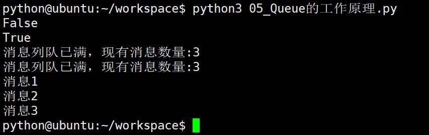</p>
<h3 id="2-&#x4EE3;&#x7801;&#x8BF4;&#x660E;">2) &#x4EE3;&#x7801;&#x8BF4;&#x660E;</h3>
<p>&#x521D;&#x59CB;&#x5316;Queue()&#x5BF9;&#x8C61;&#x65F6;&#xFF08;&#x4F8B;&#x5982;&#xFF1A;q = Queue()&#xFF09;&#xFF0C;&#x82E5;&#x62EC;&#x53F7;&#x4E2D;&#x6CA1;&#x6709;&#x6307;&#x5B9A;&#x6700;&#x5927;&#x53EF;&#x63A5;&#x6536;&#x7684;&#x6D88;&#x606F;&#x6570;&#x91CF;&#xFF0C;&#x6216;&#x6570;&#x91CF;&#x4E3A;&#x8D1F;&#x503C;&#xFF0C;&#x90A3;&#x4E48;&#x5C31;&#x4EE3;&#x8868;&#x53EF;&#x63A5;&#x53D7;&#x7684;&#x6D88;&#x606F;&#x6570;&#x91CF;&#x6CA1;&#x6709;&#x4E0A;&#x9650;&#xFF08;&#x76F4;&#x5230;&#x5185;&#x5B58;&#x7684;&#x5C3D;&#x5934;&#xFF09;&#x3002;</p>
<ul>
<li>Queue.qsize()&#xFF1A;&#x8FD4;&#x56DE;&#x5F53;&#x524D;&#x961F;&#x5217;&#x5305;&#x542B;&#x7684;&#x6D88;&#x606F;&#x6570;&#x91CF;</li>
<li>Queue.empty()&#xFF1A;&#x5982;&#x679C;&#x961F;&#x5217;&#x4E3A;&#x7A7A;&#xFF0C;&#x8FD4;&#x56DE;True&#xFF0C;&#x53CD;&#x4E4B;False </li>
<li>Queue.full()&#xFF1A;&#x5982;&#x679C;&#x961F;&#x5217;&#x6EE1;&#x4E86;&#xFF0C;&#x8FD4;&#x56DE;True,&#x53CD;&#x4E4B;False</li>
<li><p>Queue.get([block[, timeout]])&#xFF1A;&#x83B7;&#x53D6;&#x961F;&#x5217;&#x4E2D;&#x7684;&#x4E00;&#x6761;&#x6D88;&#x606F;&#xFF0C;&#x7136;&#x540E;&#x5C06;&#x5176;&#x4ECE;&#x5217;&#x961F;&#x4E2D;&#x79FB;&#x9664;&#xFF0C;block&#x9ED8;&#x8BA4;&#x503C;&#x4E3A;True</p>
<ul>
<li>&#x5982;&#x679C;block&#x4F7F;&#x7528;&#x9ED8;&#x8BA4;&#x503C;&#xFF0C;&#x4E14;&#x6CA1;&#x6709;&#x8BBE;&#x7F6E;timeout&#xFF08;&#x5355;&#x4F4D;&#x79D2;&#xFF09;&#xFF0C;&#x6D88;&#x606F;&#x5217;&#x961F;&#x5982;&#x679C;&#x4E3A;&#x7A7A;&#xFF0C;&#x6B64;&#x65F6;&#x7A0B;&#x5E8F;&#x5C06;&#x88AB;&#x963B;&#x585E;&#xFF08;&#x505C;&#x5728;&#x8BFB;&#x53D6;&#x72B6;&#x6001;&#xFF09;&#xFF0C;&#x76F4;&#x5230;&#x4ECE;&#x6D88;&#x606F;&#x5217;&#x961F;&#x8BFB;&#x5230;&#x6D88;&#x606F;&#x4E3A;&#x6B62;&#xFF0C;&#x5982;&#x679C;&#x8BBE;&#x7F6E;&#x4E86;timeout&#xFF0C;&#x5219;&#x4F1A;&#x7B49;&#x5F85;timeout&#x79D2;&#xFF0C;&#x82E5;&#x8FD8;&#x6CA1;&#x8BFB;&#x53D6;&#x5230;&#x4EFB;&#x4F55;&#x6D88;&#x606F;&#xFF0C;&#x5219;&#x629B;&#x51FA;&quot;Queue.Empty&quot;&#x5F02;&#x5E38;</li>
<li>&#x5982;&#x679C;block&#x503C;&#x4E3A;False&#xFF0C;&#x6D88;&#x606F;&#x5217;&#x961F;&#x5982;&#x679C;&#x4E3A;&#x7A7A;&#xFF0C;&#x5219;&#x4F1A;&#x7ACB;&#x523B;&#x629B;&#x51FA;&quot;Queue.Empty&quot;&#x5F02;&#x5E38;&#xFF1B;</li>
</ul>
</li>
<li><p>Queue.get_nowait()&#xFF1A;&#x76F8;&#x5F53;Queue.get(False)</p>
</li>
<li><p>Queue.put(item,[block[, timeout]])&#xFF1A;&#x5C06;item&#x6D88;&#x606F;&#x5199;&#x5165;&#x961F;&#x5217;&#xFF0C;block&#x9ED8;&#x8BA4;&#x503C;&#x4E3A;True</p>
<ul>
<li>&#x5982;&#x679C;block&#x4F7F;&#x7528;&#x9ED8;&#x8BA4;&#x503C;&#xFF0C;&#x4E14;&#x6CA1;&#x6709;&#x8BBE;&#x7F6E;timeout&#xFF08;&#x5355;&#x4F4D;&#x79D2;&#xFF09;&#xFF0C;&#x6D88;&#x606F;&#x5217;&#x961F;&#x5982;&#x679C;&#x5DF2;&#x7ECF;&#x6CA1;&#x6709;&#x7A7A;&#x95F4;&#x53EF;&#x5199;&#x5165;&#xFF0C;&#x6B64;&#x65F6;&#x7A0B;&#x5E8F;&#x5C06;&#x88AB;&#x963B;&#x585E;&#xFF08;&#x505C;&#x5728;&#x5199;&#x5165;&#x72B6;&#x6001;&#xFF09;&#xFF0C;&#x76F4;&#x5230;&#x4ECE;&#x6D88;&#x606F;&#x5217;&#x961F;&#x817E;&#x51FA;&#x7A7A;&#x95F4;&#x4E3A;&#x6B62;&#xFF0C;&#x5982;&#x679C;&#x8BBE;&#x7F6E;&#x4E86;timeout&#xFF0C;&#x5219;&#x4F1A;&#x7B49;&#x5F85;timeout&#x79D2;&#xFF0C;&#x82E5;&#x8FD8;&#x6CA1;&#x7A7A;&#x95F4;&#xFF0C;&#x5219;&#x629B;&#x51FA;&quot;Queue.Full&quot;&#x5F02;&#x5E38;</li>
<li>&#x5982;&#x679C;block&#x503C;&#x4E3A;False&#xFF0C;&#x6D88;&#x606F;&#x5217;&#x961F;&#x5982;&#x679C;&#x6CA1;&#x6709;&#x7A7A;&#x95F4;&#x53EF;&#x5199;&#x5165;&#xFF0C;&#x5219;&#x4F1A;&#x7ACB;&#x523B;&#x629B;&#x51FA;&quot;Queue.Full&quot;&#x5F02;&#x5E38;</li>
</ul>
</li>
<li><p>Queue.put_nowait(item)&#xFF1A;&#x76F8;&#x5F53;Queue.put(item, False)</p>
</li>
</ul>
<h2 id="3342-queue&#x5B9E;&#x4F8B;">3.3.4.2 Queue&#x5B9E;&#x4F8B;</h2>
<p>&#x6211;&#x4EEC;&#x4EE5;Queue&#x4E3A;&#x4F8B;&#xFF0C;&#x5728;&#x7236;&#x8FDB;&#x7A0B;&#x4E2D;&#x521B;&#x5EFA;&#x4E24;&#x4E2A;&#x5B50;&#x8FDB;&#x7A0B;&#xFF0C;&#x4E00;&#x4E2A;&#x5F80;Queue&#x91CC;&#x5199;&#x6570;&#x636E;&#xFF0C;&#x4E00;&#x4E2A;&#x4ECE;Queue&#x91CC;&#x8BFB;&#x6570;&#x636E;&#x3002;</p>
<p>&#x793A;&#x4F8B;&#x4EE3;&#x7801;&#xFF1A;</p>
<pre><code>import multiprocessing
import time
import random

# &#x5199;&#x6570;&#x636E;&#x8FDB;&#x7A0B;&#x6267;&#x884C;&#x7684;&#x4EE3;&#x7801;:
def write(q):
    for value in [&apos;A&apos;, &apos;B&apos;, &apos;C&apos;]:
        print(&apos;Put %s to queue...&apos; % value)
        q.put(value)
        time.sleep(random.random())

# &#x8BFB;&#x6570;&#x636E;&#x8FDB;&#x7A0B;&#x6267;&#x884C;&#x7684;&#x4EE3;&#x7801;:
def read(q):
    while True:
        if not q.empty():
            value = q.get(True)
            print(&apos;Get %s from queue.&apos; % value)
            time.sleep(random.random())
        else:
            break

if __name__==&apos;__main__&apos;:
    # &#x7236;&#x8FDB;&#x7A0B;&#x521B;&#x5EFA;Queue&#xFF0C;&#x5E76;&#x4F20;&#x7ED9;&#x5404;&#x4E2A;&#x5B50;&#x8FDB;&#x7A0B;&#xFF1A;
    q = multiprocessing.Queue()
    pw = multiprocessing.Process(target=write, args=(q,))
    pr = multiprocessing.Process(target=read, args=(q,))

    # &#x542F;&#x52A8;&#x5B50;&#x8FDB;&#x7A0B;pw&#xFF0C;&#x5199;&#x5165;:
    pw.start()    
    # &#x7B49;&#x5F85;pw&#x7ED3;&#x675F;:
    pw.join()
    # &#x542F;&#x52A8;&#x5B50;&#x8FDB;&#x7A0B;pr&#xFF0C;&#x8BFB;&#x53D6;:
    pr.start()
    pr.join()

    print(&apos;&apos;)
    print(&apos;&#x6240;&#x6709;&#x6570;&#x636E;&#x90FD;&#x5199;&#x5165;&#x5E76;&#x4E14;&#x8BFB;&#x5B8C;&apos;)
</code></pre><p>&#x6267;&#x884C;&#x7ED3;&#x679C;&#xFF1A;
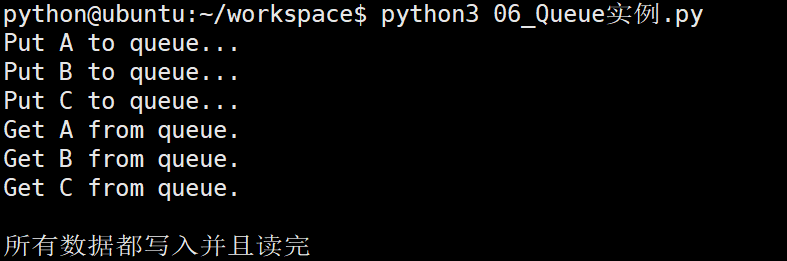</p>
<h1 id="335-&#x8FDB;&#x7A0B;&#x6C60;pool">3.3.5 &#x8FDB;&#x7A0B;&#x6C60;Pool</h1>
<h2 id="3351-&#x8FDB;&#x7A0B;&#x6C60;&#x7684;&#x4F7F;&#x7528;">3.3.5.1 &#x8FDB;&#x7A0B;&#x6C60;&#x7684;&#x4F7F;&#x7528;</h2>
<p>&#x5F53;&#x9700;&#x8981;&#x521B;&#x5EFA;&#x7684;&#x5B50;&#x8FDB;&#x7A0B;&#x6570;&#x91CF;&#x4E0D;&#x591A;&#x65F6;&#xFF0C;&#x53EF;&#x4EE5;&#x76F4;&#x63A5;&#x5229;&#x7528;multiprocessing&#x4E2D;&#x7684;Process&#x52A8;&#x6001;&#x6210;&#x751F;&#x591A;&#x4E2A;&#x8FDB;&#x7A0B;&#xFF0C;&#x4F46;&#x5982;&#x679C;&#x662F;&#x4E0A;&#x767E;&#x751A;&#x81F3;&#x4E0A;&#x5343;&#x4E2A;&#x76EE;&#x6807;&#xFF0C;&#x624B;&#x52A8;&#x7684;&#x53BB;&#x521B;&#x5EFA;&#x8FDB;&#x7A0B;&#x7684;&#x5DE5;&#x4F5C;&#x91CF;&#x5DE8;&#x5927;&#xFF0C;&#x6B64;&#x65F6;&#x5C31;&#x53EF;&#x4EE5;&#x7528;&#x5230;multiprocessing&#x6A21;&#x5757;&#x63D0;&#x4F9B;&#x7684;Pool&#x65B9;&#x6CD5;&#x3002;</p>
<p>&#x521D;&#x59CB;&#x5316;Pool&#x65F6;&#xFF0C;&#x53EF;&#x4EE5;&#x6307;&#x5B9A;&#x4E00;&#x4E2A;&#x6700;&#x5927;&#x8FDB;&#x7A0B;&#x6570;&#xFF0C;&#x5F53;&#x6709;&#x65B0;&#x7684;&#x8BF7;&#x6C42;&#x63D0;&#x4EA4;&#x5230;Pool&#x4E2D;&#x65F6;&#xFF0C;&#x5982;&#x679C;&#x6C60;&#x8FD8;&#x6CA1;&#x6709;&#x6EE1;&#xFF0C;&#x90A3;&#x4E48;&#x5C31;&#x4F1A;&#x521B;&#x5EFA;&#x4E00;&#x4E2A;&#x65B0;&#x7684;&#x8FDB;&#x7A0B;&#x7528;&#x6765;&#x6267;&#x884C;&#x8BE5;&#x8BF7;&#x6C42;&#xFF1B;&#x4F46;&#x5982;&#x679C;&#x6C60;&#x4E2D;&#x7684;&#x8FDB;&#x7A0B;&#x6570;&#x5DF2;&#x7ECF;&#x8FBE;&#x5230;&#x6307;&#x5B9A;&#x7684;&#x6700;&#x5927;&#x503C;&#xFF0C;&#x90A3;&#x4E48;&#x8BE5;&#x8BF7;&#x6C42;&#x5C31;&#x4F1A;&#x7B49;&#x5F85;&#xFF0C;&#x76F4;&#x5230;&#x6C60;&#x4E2D;&#x6709;&#x8FDB;&#x7A0B;&#x7ED3;&#x675F;&#xFF0C;&#x624D;&#x4F1A;&#x7528;&#x4E4B;&#x524D;&#x7684;&#x8FDB;&#x7A0B;&#x6765;&#x6267;&#x884C;&#x65B0;&#x7684;&#x4EFB;&#x52A1;&#x3002;</p>
<p>&#x793A;&#x4F8B;&#x4EE3;&#x7801;&#xFF1A;</p>
<pre><code>import os, time, random, multiprocessing

def worker(msg):
    t_start = time.time()
    print(&quot;%s&#x5F00;&#x59CB;&#x6267;&#x884C;,&#x8FDB;&#x7A0B;&#x53F7;&#x4E3A;%d&quot; % (msg,os.getpid()))
    # random.random()&#x968F;&#x673A;&#x751F;&#x6210;0~1&#x4E4B;&#x95F4;&#x7684;&#x6D6E;&#x70B9;&#x6570;
    time.sleep(random.random()*2) 
    t_stop = time.time()
    print(msg,&quot;&#x6267;&#x884C;&#x5B8C;&#x6BD5;&#xFF0C;&#x8017;&#x65F6;%0.2f&quot; % (t_stop-t_start))

po = multiprocessing.Pool(3)  # &#x5B9A;&#x4E49;&#x4E00;&#x4E2A;&#x8FDB;&#x7A0B;&#x6C60;&#xFF0C;&#x6700;&#x5927;&#x8FDB;&#x7A0B;&#x6570;3

for i in range(10):
    # Pool().apply_async(&#x8981;&#x8C03;&#x7528;&#x7684;&#x76EE;&#x6807;,(&#x4F20;&#x9012;&#x7ED9;&#x76EE;&#x6807;&#x7684;&#x53C2;&#x6570;&#x5143;&#x7956;,))
    # &#x6BCF;&#x6B21;&#x5FAA;&#x73AF;&#x5C06;&#x4F1A;&#x7528;&#x7A7A;&#x95F2;&#x51FA;&#x6765;&#x7684;&#x5B50;&#x8FDB;&#x7A0B;&#x53BB;&#x8C03;&#x7528;&#x76EE;&#x6807;
    po.apply_async(worker,(i,))

print(&quot;----start----&quot;)
po.close()  # &#x5173;&#x95ED;&#x8FDB;&#x7A0B;&#x6C60;&#xFF0C;&#x5173;&#x95ED;&#x540E;po&#x4E0D;&#x518D;&#x63A5;&#x6536;&#x65B0;&#x7684;&#x8BF7;&#x6C42;
po.join()  # &#x7B49;&#x5F85;po&#x4E2D;&#x6240;&#x6709;&#x5B50;&#x8FDB;&#x7A0B;&#x6267;&#x884C;&#x5B8C;&#x6210;&#xFF0C;&#x5FC5;&#x987B;&#x653E;&#x5728;close&#x8BED;&#x53E5;&#x4E4B;&#x540E;
print(&quot;-----end-----&quot;)
</code></pre><p>&#x6267;&#x884C;&#x7ED3;&#x679C;&#xFF1A;
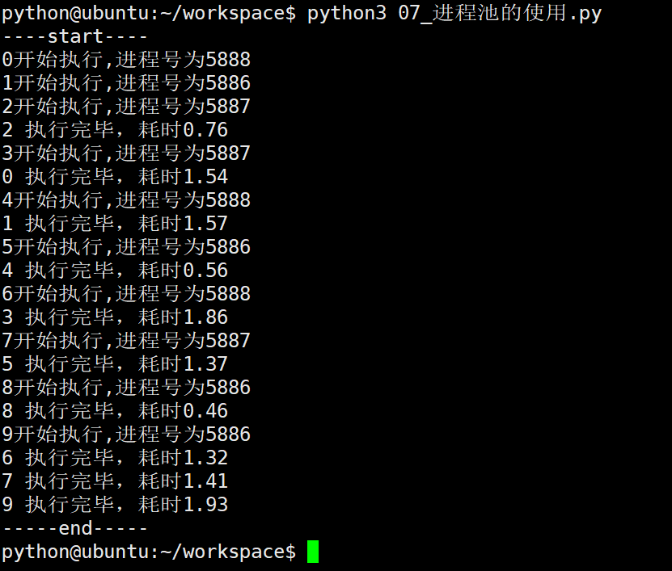</p>
<p><strong>multiprocessing.Pool&#x5E38;&#x7528;&#x51FD;&#x6570;&#x89E3;&#x6790;&#xFF1A;</strong></p>
<ul>
<li>apply_async(func[, args[, kwds]])&#xFF1A;&#x4F7F;&#x7528;&#x975E;&#x963B;&#x585E;&#x65B9;&#x5F0F;&#x8C03;&#x7528;func&#xFF08;&#x5E76;&#x884C;&#x6267;&#x884C;&#xFF0C;&#x5835;&#x585E;&#x65B9;&#x5F0F;&#x5FC5;&#x987B;&#x7B49;&#x5F85;&#x4E0A;&#x4E00;&#x4E2A;&#x8FDB;&#x7A0B;&#x9000;&#x51FA;&#x624D;&#x80FD;&#x6267;&#x884C;&#x4E0B;&#x4E00;&#x4E2A;&#x8FDB;&#x7A0B;&#xFF09;&#xFF0C;args&#x4E3A;&#x4F20;&#x9012;&#x7ED9;func&#x7684;&#x53C2;&#x6570;&#x5217;&#x8868;&#xFF0C;kwds&#x4E3A;&#x4F20;&#x9012;&#x7ED9;func&#x7684;&#x5173;&#x952E;&#x5B57;&#x53C2;&#x6570;&#x5217;&#x8868;</li>
<li>close()&#xFF1A;&#x5173;&#x95ED;Pool&#xFF0C;&#x4F7F;&#x5176;&#x4E0D;&#x518D;&#x63A5;&#x53D7;&#x65B0;&#x7684;&#x4EFB;&#x52A1;</li>
<li>terminate()&#xFF1A;&#x4E0D;&#x7BA1;&#x4EFB;&#x52A1;&#x662F;&#x5426;&#x5B8C;&#x6210;&#xFF0C;&#x7ACB;&#x5373;&#x7EC8;&#x6B62;</li>
<li>join()&#xFF1A;&#x4E3B;&#x8FDB;&#x7A0B;&#x963B;&#x585E;&#xFF0C;&#x7B49;&#x5F85;&#x5B50;&#x8FDB;&#x7A0B;&#x7684;&#x9000;&#x51FA;&#xFF0C; &#x5FC5;&#x987B;&#x5728;close&#x6216;terminate&#x4E4B;&#x540E;&#x4F7F;&#x7528;</li>
</ul>
<h2 id="3352-&#x8FDB;&#x7A0B;&#x6C60;&#x4E2D;&#x7684;queue">3.3.5.2 &#x8FDB;&#x7A0B;&#x6C60;&#x4E2D;&#x7684;Queue</h2>
<p>&#x5982;&#x679C;&#x8981;&#x4F7F;&#x7528;Pool&#x521B;&#x5EFA;&#x8FDB;&#x7A0B;&#xFF0C;&#x5C31;&#x9700;&#x8981;&#x4F7F;&#x7528;multiprocessing.Manager()&#x4E2D;&#x7684;Queue()&#xFF0C;&#x800C;&#x4E0D;&#x662F;multiprocessing.Queue()&#xFF0C;&#x5426;&#x5219;&#x4F1A;&#x5F97;&#x5230;&#x4E00;&#x6761;&#x5982;&#x4E0B;&#x7684;&#x9519;&#x8BEF;&#x4FE1;&#x606F;&#xFF1A;</p>
<pre><code>RuntimeError: Queue objects should only be shared between processes through inheritance.
</code></pre><p>&#x4E0B;&#x9762;&#x7684;&#x5B9E;&#x4F8B;&#x6F14;&#x793A;&#x4E86;&#x8FDB;&#x7A0B;&#x6C60;&#x4E2D;&#x7684;&#x8FDB;&#x7A0B;&#x5982;&#x4F55;&#x901A;&#x4FE1;&#xFF1A;</p>
<pre><code>import os, time, random, multiprocessing

def reader(q):
    print(&quot;reader&#x542F;&#x52A8;(%s),&#x7236;&#x8FDB;&#x7A0B;&#x4E3A;(%s)&quot; % (os.getpid(), os.getppid()))
    for i in range(q.qsize()):
        print(&quot;reader&#x4ECE;Queue&#x83B7;&#x53D6;&#x5230;&#x6D88;&#x606F;&#xFF1A;%s&quot; % q.get(True))

def writer(q):
    print(&quot;writer&#x542F;&#x52A8;(%s),&#x7236;&#x8FDB;&#x7A0B;&#x4E3A;(%s)&quot; % (os.getpid(), os.getppid()))
    for i in &quot;itcast&quot;:
        q.put(i)

if __name__==&quot;__main__&quot;:
    print(&quot;(%s) start&quot; % os.getpid())
    q = multiprocessing.Manager().Queue()  # &#x4F7F;&#x7528;Manager&#x4E2D;&#x7684;Queue
    po = multiprocessing.Pool()
    po.apply_async(writer, (q,))

    time.sleep(1)  # &#x5148;&#x8BA9;&#x4E0A;&#x9762;&#x7684;&#x4EFB;&#x52A1;&#x5411;Queue&#x5B58;&#x5165;&#x6570;&#x636E;&#xFF0C;&#x7136;&#x540E;&#x518D;&#x8BA9;&#x4E0B;&#x9762;&#x7684;&#x4EFB;&#x52A1;&#x5F00;&#x59CB;&#x4ECE;&#x4E2D;&#x53D6;&#x6570;&#x636E;

    po.apply_async(reader, (q,))
    po.close()
    po.join()
    print(&quot;(%s) End&quot; % os.getpid())
</code></pre><p>&#x6267;&#x884C;&#x7ED3;&#x679C;&#xFF1A;
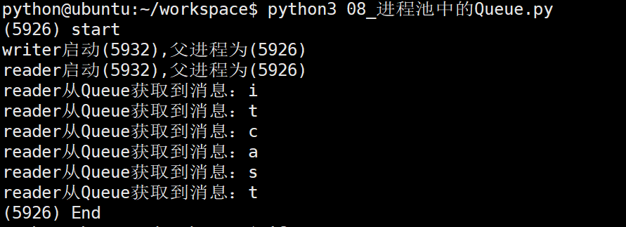</p>
<h1 id="336-&#x6848;&#x4F8B;&#xFF1A;&#x591A;&#x8FDB;&#x7A0B;&#x62F7;&#x8D1D;&#x6587;&#x4EF6;&#x5939;">3.3.6 &#x6848;&#x4F8B;&#xFF1A;&#x591A;&#x8FDB;&#x7A0B;&#x62F7;&#x8D1D;&#x6587;&#x4EF6;&#x5939;</h1>
<p>&#x793A;&#x4F8B;&#x4EE3;&#x7801;&#xFF1A;</p>
<pre><code>import multiprocessing
import os
import time

def copyFile(q, fileName, srcFolderName, destFolderName):
    &quot;&quot;&quot;&#x5B8C;&#x6210;&#x6587;&#x4EF6;&#x7684;copy&quot;&quot;&quot;
    # print(&quot;&#x6B63;&#x5728;copy&#x6587;&#x4EF6;%s&quot; % fileName)

    srcFile = open(srcFolderName + &quot;/&quot; + fileName, &quot;rb&quot;) #&#x8BFB;&#x65B9;&#x5F0F;&#x6253;&#x5F00;
    destFile = open(destFolderName + &quot;/&quot; + fileName, &quot;wb&quot;)#&#x5199;&#x65B9;&#x5F0F;&#x6253;&#x5F00;

    #&#x8BFB;&#x53D6;&#x6E90;&#x6587;&#x4EF6;&#x5185;&#x5BB9;&#xFF0C;&#x62F7;&#x8D1D;&#x5230;&#x76EE;&#x6807;&#x6587;&#x4EF6;
    content = srcFile.read()
    destFile.write(content)

    #&#x5173;&#x95ED;&#x6587;&#x4EF6;
    srcFile.close()
    destFile.close()

    #&#x9002;&#x5F53;&#x5EF6;&#x65F6;
    time.sleep(0.2)

    #&#x6587;&#x4EF6;&#x540D;&#x653E;&#x5165;Queue&#x4E2D;
    q.put(fileName)


def main():
    &quot;&quot;&quot;&#x5B8C;&#x6210;&#x6574;&#x4F53;&#x7684;&#x63A7;&#x5236;&quot;&quot;&quot;
    # 1. &#x83B7;&#x53D6;&#x9700;&#x8981;copy&#x7684;&#x6587;&#x4EF6;&#x5939;&#x7684;&#x540D;&#x5B57;
    srcFolderName = input(&quot;&#x8BF7;&#x8F93;&#x5165;&#x9700;&#x8981;copy&#x7684;&#x6587;&#x4EF6;&#x5939;&#x7684;&#x540D;&#x5B57;&#xFF1A;&quot;)

    # 2. &#x6839;&#x636E;&#x9700;&#x8981;copy&#x7684;&#x6587;&#x4EF6;&#x5939;&#x7684;&#x540D;&#x5B57;&#xFF0C;&#x6574;&#x7406;&#x4E00;&#x4E2A;&#x65B0;&#x7684;&#x6587;&#x4EF6;&#x5939;&#x7684;&#x540D;&#x5B57;
    destFolderName = srcFolderName + &quot;[&#x590D;&#x4EF6;]&quot;

    # 3. &#x521B;&#x5EFA;&#x4E00;&#x4E2A;&#x65B0;&#x7684;&#x6587;&#x4EF6;&#x5939;
    try:
        os.mkdir(destFolderName)
    except Exception as ret:
        pass

    # 4. &#x83B7;&#x53D6;&#x6587;&#x4EF6;&#x5939;&#x4E2D;&#x9700;&#x8981;copy&#x7684;&#x6587;&#x4EF6;&#x540D;&#x5B57;
    fileNameList = os.listdir(srcFolderName)

    # 5.1 &#x521B;&#x5EFA;&#x4E00;&#x4E2A;&#x961F;&#x5217;
    q = multiprocessing.Manager().Queue()

    # 5.2 &#x521B;&#x5EFA;&#x4E00;&#x4E2A;&#x8FDB;&#x7A0B;&#x6C60;&#xFF0C;&#x5B8C;&#x6210;copy
    pool = multiprocessing.Pool(5)

    # 6. &#x5411;&#x8FDB;&#x7A0B;&#x6C60;&#x4E2D;&#x6DFB;&#x52A0;&#x4EFB;&#x52A1;
    for fileName in fileNameList:
        pool.apply_async(copyFile, (q, fileName, srcFolderName, destFolderName))

    allNum = len(fileNameList)
    currentNum = 0
    while True:
        fileName = q.get() #&#x53D6;&#x51FA;&#x5B8C;&#x6210;&#x7684;&#x6587;&#x4EF6;&#x540D;
        currentNum += 1

        # print(&quot;&#x5DF2;&#x7ECF;&#x5B8C;&#x6210;&#x4E86;&#x4ECE;%s-------(%s)------&gt;%s&quot; % (srcFolderName, fileName, destFolderName))
        print(&quot;\r&#x8FDB;&#x5EA6;%.2f%%&quot; % (100*currentNum/allNum), end=&quot;&quot;)

        #&#x62F7;&#x8D1D;&#x5B8C;&#x6210;
        if currentNum == allNum:
            break


    # &#x4E0D;&#x518D;&#x5411;&#x8FDB;&#x7A0B;&#x6C60;&#x4E2D;&#x6DFB;&#x52A0;&#x4EFB;&#x52A1;&#xFF0C;&#x5E76;&#x4E14;&#x7B49;&#x5F85;&#x6240;&#x6709;&#x7684;&#x4EFB;&#x52A1;&#x7ED3;&#x675F;
    pool.close()
    pool.join()

    print(&quot;\n\nok..&quot;)


if __name__ == &quot;__main__&quot;:
    main()
</code></pre>
                    
                    </section>
                
                
                </div>
            </div>
        </div>

        
        <a href="../03section/02_线程.html" class="navigation navigation-prev " aria-label="Previous page: 线程"><i class="fa fa-angle-left"></i></a>
        
        
        <a href="../03section/04_协程.html" class="navigation navigation-next " aria-label="Next page: 协程"><i class="fa fa-angle-right"></i></a>
        
    </div>
</div>

        
<script src="../gitbook/app.js"></script>

    
    <script src="../gitbook/plugins/gitbook-plugin-search/lunr.min.js"></script>
    

    
    <script src="../gitbook/plugins/gitbook-plugin-search/search.js"></script>
    

    
    <script src="../gitbook/plugins/gitbook-plugin-sharing/buttons.js"></script>
    

    
    <script src="../gitbook/plugins/gitbook-plugin-fontsettings/buttons.js"></script>
    

<script>
require(["gitbook"], function(gitbook) {
    var config = {"highlight":{},"search":{"maxIndexSize":1000000},"sharing":{"facebook":true,"twitter":true,"google":false,"weibo":false,"instapaper":false,"vk":false,"all":["facebook","google","twitter","weibo","instapaper"]},"fontsettings":{"theme":"white","family":"sans","size":2}};
    gitbook.start(config);
});
</script>

        
    </body>
    
</html>
